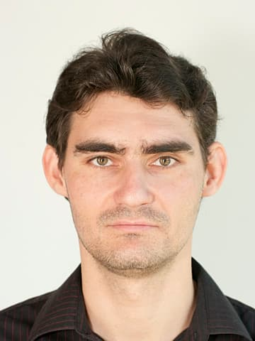
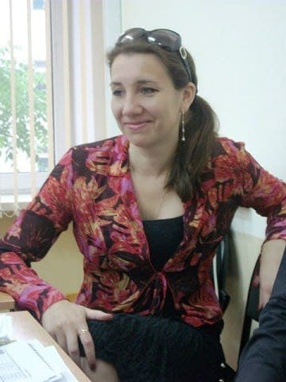
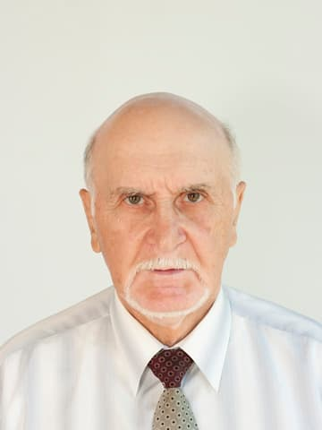
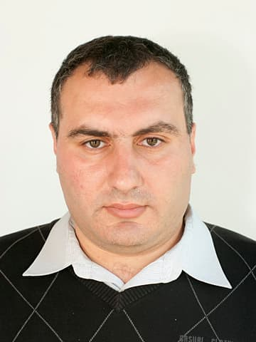

Проектирование базы знаний по проблеме взаимодействия колеса и рельса
Кафедра принимала участие в IV Студенческой международной заочной научно-практической конференции «Научное сообщество студентов XXI столетия»
Участники: студенты Дмитрий Ермаков и Ульяна Родина под руководством старшего преподавателя Валентины Геннадьевны Хандыго.
Кафедра победила во внутривузовском конкурсе на лучшую научную работу аспирантов, докторантов и молодых ученых по естественным, техническим и гуманитарным наукам
Участники: преподаватель Елена Геннадьевна Рыжикова и аспиранты Валентина Геннадьевна Хандыго и Ирина Ивановна Теремкова. Номинация: 7.5 Современные информационные технологии.
Профессор Лев Игоревич Евельсон принимал участие в Десятой открытой Всероссийской конференции «Преподавание информационных технологий в Российской Федерации»
Конференция проходила в МГУ им. М.В. Ломоносова.
Кафедра принимала участие в Международном конкурсе ThinkQuest от компании Oracle
Участники: cтуденты Марина Горожанкина, Екатерина Поперечная, Ирина Маловастая и Дмитрий Изотов под руководством профессора Льва Игоревича Евельсона. Номинации: Digital media и Application Development.
Профессор Лев Игоревич Евельсон избран на третий срок на должности заведующего кафедрой
Кафедра участвовала в мероприятиях российско-норвежского проекта по информационно-экологическому образованию школьников SPARE
Кафедра принимала участие в «Научной студенческой конференции БГИТА — 2012»
Участники: студенты Людмила Ширяева, Сергей Биндасов, Максим Кучерявый, Сергей Юдаков и преподаватель Иван Валерьевич Маринин.
Студентка Людмила Ширяева принимала участие в секции «Информационные технологии» конкурса на лучшую инновационную работу «У.М.Н.И.К.»
Конкурс проходил в рамках III региональной научно-практической конференции молодых исследователей и специалистов «Проведение исследований по приоритетным направлениям современной науки для создания инновационных технологий».
Профессор Лев Игоревич Евельсон и преподаватель Майя Яковлевна Рафаловская посетили Пенсильванский университет в США
2011
Команда студентов 5 курса ИСТ заняла первое место в интеллектуальном внутривузовском конкурсе «Игры разума»

Преподаватель Иван Валерьевич Маринин прошел повышение квалификации в УрФУ им. Б.Н. Ельцина
Открыт прием по направлению бакалавриата 230400 Информационные системы и технологии
Профессор Лев Игоревич Евельсон принимал участие в форуме IBM Lotus 2011 «Разумное сотрудничество для повышения эффективности работы»

Преподаватель Ольга Николаевна Юркова защитила кандидатскую диссертацию

Доцент Эдуард Арутюнович Саркисов прошел стажировку в Брянском филиале «Газпромбанка» по направлению банковских информационных систем
Профессор Лев Игоревич Евельсон и преподаватель Майя Яковлевна Рафаловская принимали участие в бизнес-форуме IBM-2011 «Разумные идеи и инновации — основа прогресса и будущего России» в Сколково
Лев Игоревич Евельсон и Эмилия Владимировна Гегерь опубликовали в соавторстве монографию в издательстве «Ладомир»
Монография посвящена статистическому анализу заболеваемости сахарным диабетом в Брянской области
Профессор Лев Игоревич Евельсон выступал с докладом на 18-ой Международной научной конференции «Wear of Materials»
Конференция проходила в Филадельфии, США.
Студентка Ирина Евельсон удостоена стипендий Президента России и Правительства России
Профессор Лев Игоревич Евельсон получил грант РФФИ на продолжение работы «Исследование сложных трибодинамических систем с помощью информационных и кибернетических моделей»
Кафедра принимала участие в секции «Информационные технологии» конкурса на лучшую инновационную работу «У.М.Н.И.К.»
Участники: Студенты Ирина Евельсон и Иван Шаронов. Конкурс проходил в рамках II региональной научно-практической конференции молодых исследователей и специалистов «Проведение исследований по приоритетным направлениям современной науки для создания инновационных технологий».
Лев Игоревич Евельсон и Майя Яковлевна Рафаловская посетили Принстонский университет в США
2010
На базе кафедры состоялось второе выездное заседание Межведомственного научного совета по трибологии
Информационные ресурсы по трибологии, разработанные преподавателями, аспирантами и студентами кафедры, были одобрены председателем секции Информационных технологий д.т.н., профессором Сергеем Михайловичем Захаровым.
Профессор Лев Игоревич Евельсон принимал участие в научно-технической конференции «Трибология — машиностроению»
Конференция была посвящена стадвадцатилетию выдающегося триболога М.М.Хрущова.

Преподаватель Борис Наумович Прусс защитил кандидатскую диссертацию
Разработка программного обеспечения для методов экспертных оценок
Профессор Лев Игоревич Евельсон выступал с докладом на конференции в г. Иваново.
Команды студентов 1 и 4 курсов ИСТ принимали участие в интеллектуальном внутривузовском конкурсе «Игры разума». 4 курс занял 1 место, 1 курс — 3.
Профессор Лев Игоревич Евельсон выступал с докладом на семинаре в ИМАШ РАН.
Студенты Ирина Евельсон, Людмила Ширяева, Вячеслав Ходунов и Иван Шаронов принимали участие в конкурсе на лучшую научную работу студентов по естественным, техническим и гуманитарным наукам «Современные научные достижения Брянск-2010» в номинации «Современные информационные технологии». Ирина Евельсон заняла первое место.
Профессор Лев Игоревич Евельсонпринимал участие в конференции «Решения IBM для разумной модернизации» в Москве.
Профессор Лев Игоревич Евельсон получил грант РФФИ на проведение фундаментальной научно-исследовательской работы «Исследование сложных трибодинамических систем с помощью информационных и кибернетических моделей».
Студентка Ирина Евельсонзаняла второе место в номинации «Лучший доклад секции Информационное обеспечение инновационных процессов» Международного молодежного форума «Инновации 2010. Современное состояние и перспективы развития инновационной экономики» и первое место на областном межвузовском конкурсе.
Преподаватели Елена Геннадьевна Изюмова (Рыжикова) и Валентина Геннадьевна Хандыго выиграли региональный конкурс инновационных проектов Фонда содействия развитию малых форм предприятий в научно-технической сфере и получили гранты на реализацию проектов.
2009
Студенты Владимир Пугачев, Игорь Трусов и Александр Кокотов под руководством преподавателя Екатерины Вячеславовны Анишкинойзаняли первое место в номинации «Двумерная анимация» на VI Международном молодежном фестивале информационных технологий в Архангельске с проектом «Путешествие туда и обратно».
Студенты Николай Андрейкин, Анастасия Каменева, Елена Фомичева и Евгений Трушаковпринимали участие в V Международной студенческой конференции «Инновационное развитие экономики региона: проблемы, задачи, перспективы». Евгений Трушаковзанял второе место на секции «Роль информационных технологий в развитии инновационной экономики».
Команды студентов 1 — 4 курсов ИСТ принимали участие в интеллектуальном внутривузовском конкурсе «Игры разума». Команда 4 курса заняла 2 место.
Профессор Лев Игоревич Евельсонпринимал участие в семинаре для преподавателей ИТ-дисциплин программы Microsoft IT Academy «Подготовка сертифицированных специалистов для работы с современными инфраструктурными решениями на платформе Microsoft» в Москве.
Курсовая работа студента Дмитрия Позднякова по дисциплине «Информационные сети» заняла первое место в конкурсе курсовых и дипломных работ БГИТА.
Профессор Лев Игоревич Евельсон и преподаватели Алексей Сергеевич Ладейщиков и Майя Яковлевна Рафаловская выступали с докладами на конференции в МИФИ, г.Москва.
Студент Евгений Никифоровзанял второе место в конкурсе на лучший доклад секции «Информационное обеспечение инновационных процессов» Международного студенческого форума «Инновации 2009. Инновационные процессы в социально-экономическом развитии: состояние и перспективы».
Профессор Лев Игоревич Евельсонпринимал участие в Международном научно-техническом семинаре «Компьютерное моделирование в железнодорожном транспорте: вопросы динамики, прочности и износа».
2008
Студенты Игорь Трусов, Владимир Пугачев и Александр Кокотов под руководством преподавателя Екатерины Вячеславовны Анишкинойпринимали участие в номинации «Видеоролики» на V Международном молодежном фестивале информационных технологий в Архангельске.
Профессор Лев Игоревич Евельсонпринимал участие в Технологическом Форуме IBM «Будущее за инновациями».
Профессор Лев Игоревич Евельсонпринимал участие в конференции компании Microsoft в Москве.
Команды студентов 2 и 4 курса ИСТ принимали участие в интеллектуальном внутривузовском конкурсе «Игры разума».
Совместно с кафедрой ГУ и Ф выполнена работа по госконтракту с Администрацией Брянской области «Организация информационного взаимодействия рынка труда и образовательных услуг».
Сотрудники кафедры награждены за активное участие в спартакиаде «Здоровье» среди профессорско-преподавательского состава и сотрудников высших учебных заведений области.
2007
Профессор Лев Игоревич Евельсон избран на второй срок на должности заведующего кафедрой.
Профессор Лев Игоревич Евельсонпринимал участие в Первой ежегодной конференции пользователей решений Autodesk для машиностроения Autodesk Inventor «От идеи до реализации».
Студент Александр Котов занял второе место в смотре-конкурсе НИРС.
Профессор Лев Игоревич Евельсон и преподаватель Хорев Д.В. выступали с докладами на конференции в МИФИ, г.Москва.
Команда студентов 3 курса ИСТ заняла 2 место в интеллектуальном внутривузовском конкурсе «Игры разума».
Преподаватель Иван Валерьевич Марининпрошел курс обучения Autodesk Inventor Series 10.
Профессор Лев Игоревич Евельсон выступал с докладом на конференции «Трибология — машиностроению» в г. Санкт-Петербурге.
Профессор Лев Игоревич Евельсон принимал участие в V Всероссийской конференции АП КИТ в Тверской области.
Команды студентов 1, 2 и 3 курса ИСТ принимали участие в интеллектуальном конкурсе «Что? Где? Когда?» в БГТУ.
Команда БГИТА заняла третье место в спартакиаде «Здоровье» профессорско-преподавательского состава вузов по шахматам.
Профессор Лев Игоревич Евельсон и преподаватели Андрей Петрович Симин, Хорев Д.В., Екатерина Вячеславовна Анишкина и Майя Яковлевна Рафаловскаявыступали с докладами на Международной конференции в г. Пушкин.
Кафедра ИТ в составе БГИТА успешно прошла государственную аттестацию.
2006
На базе кафедры проведен зональный этап Всероссийского Молодежного чемпионата IT Academy 2006, организованного фирмами Microsoft, Adobe, ZyXEL и Лабораторией Касперского.
Профессор Лев Игоревич Евельсонпрошел краткосрочное обучение в Российском государственном университете инновационных технологий и предпринимательства по направлению «Инновационная деятельность», программа «Инновационный бизнес».
Профессор Лев Игоревич Евельсон выступал с докладом на конференции в МИФИ, г.Москва.
На базе кафедры состоялось выездное заседание Межведомственного научного совета по трибологии с участием председателя секции Информационных технологий д.т.н., профессора Сергея Михайловича Захарова, ученого с мировой известностью, эксперта ООН и ИСО. На заседании выступили с докладами несколько преподавателей и аспирантов кафедры.
Команда студентов БГИТА под руководством преподавателя Екатерины Вячеславовны Анишкиной принимали участие в конкурсе «Join Multimedia 2006 R — Создай мультимедийную презентацию» в Москве.
2005
Состоялся российско-американский симпозиум «Обмена между Россией и США в образовании». От БГИТА участвовал профессор Лев Игоревич Евельсон с презентацией о достижениях кафедры.
Преподаватели Александр Владимирович Дарков и Игорь Леонидович Прокофьев защитили кандидатские диссертации.
2004
Профессор Лев Игоревич Евельсонпрошел повышение квалификации в Российском государственном институте открытого образования Министерства образования и науки Российской федерации по учебному курсу «Преподавание в сети интернет».
Состоялась встреча с советником Посольства США по проблемам образования.
Профессор Лев Игоревич Евельсон выступал с докладом на конференции в МИФИ, г.Москва.
Профессор Лев Игоревич Евельсонпрошел краткосрочное обучение на факультете повышения квалификации преподавателей и специалистов ГОУ ВПО Московского энергетического института по теме «Информатизация образования: направления, средства, технологии».
Профессор Лев Игоревич Евельсон выступал с докладом на семинаре в ИМАШ РАН.
Открыта новая специальность 230201 Информационные системы и технологии и прием в аспирантуру по специальности 05.02.02 — Машиноведение, системы приводов и детали машин.
Профессор Лев Игоревич Евельсон и доцент Андрей Петрович Симин получили патент на подшипник скольжения.
2003
Под руководством профессора Льва Игоревича Евельсона, совместно с компанией «Вист», создана общеакадемическая компьютерная сеть, объединяющая более 200 компьютеров, расположенных во всех пяти учебно-лабораторных корпусах академии.
Кафедра участвовала в мероприятиях российско-норвежского проекта по информационно-экологическому образованию школьников SPARE.
Профессор Лев Игоревич Евельсон и преподаватель Андрей Петрович Симин создали программное средство для разработки трибологических экспертных систем.
Коллективом преподавателей кафедры ИТ под руководством профессора Льва Игоревича Евельсона совместно с рядом других кафедр разработаны электронные учебные курсы для дистанционного обучения по дисциплинам «Философия» и «Экология».
Преподаватель Андрей Петрович Симин защитил кандидатскую диссертацию.
Создано виртуальное представительство БГИТА в Общероссийской системе дистанционного образования.
Профессор Лев Игоревич Евельсонпрошел краткосрочное обучение в Институте повышения квалификации информационных работников Минпромнауки России по теме «Обеспечение информационной безопасности в компьютерных сетях».
2001
На конкурсе информационных ресурсов SAE в США проект Брянского отделения, выполненный под руководством профессора Льва Игоревича Евельсона совместно с кафедрой МТД, получил Серебряный уровень.
В результате разделения кафедры высшей математики и вычислительной техники была образована кафедра информационных технологий. Заведующим кафедрой избран профессор Лев Игоревич Евельсон. Заведующим лабораторией назначен Алексей Валерьевич Болховитин.
2000
Приобретены ПК AMD K6-2.
Заведующим лабораторией назначен Владимир Александрович Беняш.
1993
В результате слияния с кафедрой математики образована кафедра высшей математики и вычислительной техники.
Класс переименован в лабораторию вычислительной техники. Заведующим лабораторией назначен Валерий Петрович Чипизубов.
В этом году были приобретены ЭВМ МИР-1 и НАИРИ-К.
Простота входного языка АЛМИР, близкого по своей структуре к языку математических формул, делала ЭВМ МИР-1 доступной широкому кругу пользователей и приемлемой в учебном процессе технического вуза.
При кафедре математики создан счетный класс для выполнения лабораторных работ по математике. Обслуживала класс Галина Яковлевна Бурыкина.
Вычислительная база класса в то время состояла из десяти арифмометров ВК-1 и пяти „Феликсов“, которые предназначались для выполнения арифметических операций. „Феликс“ позволял работать с операндами длиной до 9 знаков и получать ответ длиной до 13 знаков.